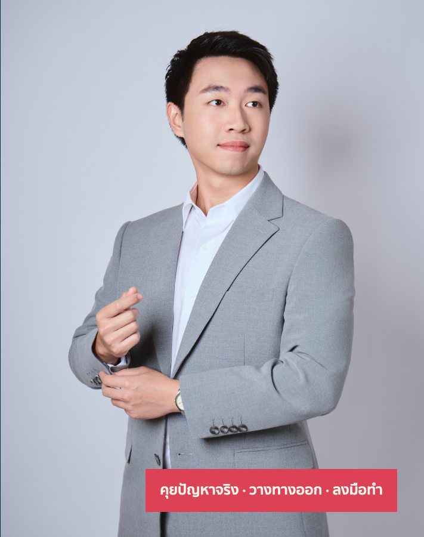

วางระบบฝ่ายขาย · C1
เลือก 2 เรื่อง
ทีมเริ่มใช้ใน 1 วัน
เช้าเก็บโจทย์จากตัวเลขจริง
บ่ายผมลงระบบพื้นฐานให้ทีมใช้
ปั้นทีมขายคัดคนเป้าและค่าคอมหัวหน้าคุมทีม
AI Officeตอบแชตเอกสารขายคอนเทนต์
เลือกได้ 2 จาก 6 เรื่อง ต่อ 1 วัน